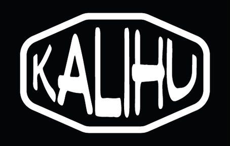

Sheet 01Naming
CKALI+HU
caliu (Catalan, n.) — the warmth of embers after the fire. Also: human warmth, comfort, being close. Fer caliu — to gather round, like brothers.

- C → K: the logo drawing already looked like a K
- + H: to sound more international
Also on the table
JellyKupsno warmth in them